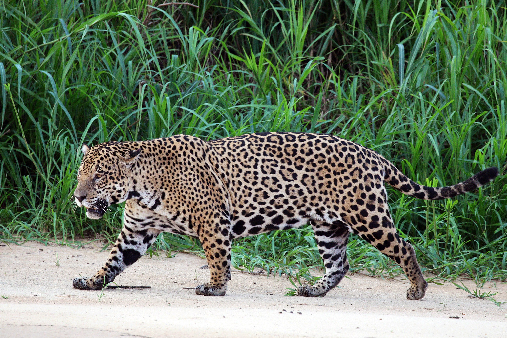

Vyskytuje se od Mexika přes velkou část Střední Ameriky jižně do Paraguaye a severní Argentiny. Několik jedinců žije nedaleko Tucsonu v americkém státě Arizona.Stavbou těla a zbarvením se nejvíce podobá levhartovi (P. pardus), i když je robustnější a obvykle většího vzrůstu. Jeho chování a areál jsou spíše podobné chování a areálu tygra. Preferuje deštné lesy, ale vyskytuje se i v zalesněných a otevřených terénech. Žije poblíž vody a stejně jako tygr je zdatným plavcem.
Podle klasifikace IUCN patří mezi téměř ohrožené druhy a jeho populace klesá například z důvodu ztráty přirozeného prostředí. Mezinárodní obchod s jaguáry je zakázaný, ale každoročně zemře při konfliktech s lidmi, hlavně s farmáři v Jižní Americe, mnoho jedinců. Jaguár byl důležitým symbolem mnoha původních amerických kultur, například Mayů a Aztéků.